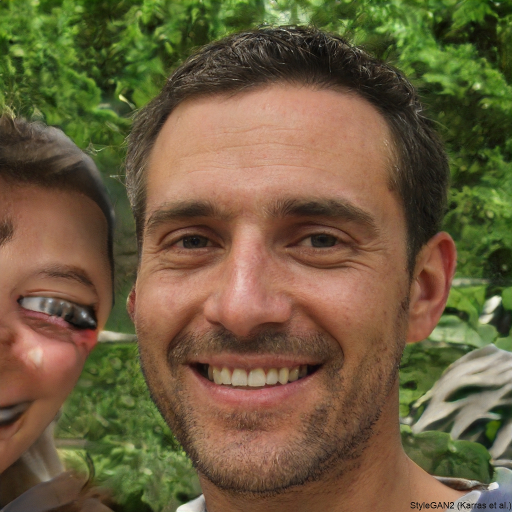

Nuestras Reseñas

“Pensé que me estaba quedando sordo, no dejaba de escuchar ruidos y vibraciones. Gracias a los Neuropibes me di cuenta que solo eran mis 4 cafeteras.”
— Gerónimo "El Momo" Benavides

“Estaba convencido de que me estaba apagando lentamente. Resultó que había desenchufado el módem y no tenía WiFi hace tres días. Gracias Desde el Respeto por devolverme la fe (y el 4G).”
— Martín Carballo“Pensaba que tenía cáncer de algo que ni tengo. Después del episodio 17, me reí tanto que se me fue el síntoma. O se escondió. Da igual. Gracias"
— Tamara Feldman“Creí que tenía un parásito cerebral por escucharme hablar solo. Pero gracias a su podcast, entendí que soy simplemente hincha de Vélez.”
— Norberto Funes